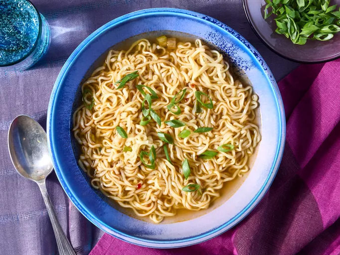

Ramen Noodle Soup

Description
An easy to make soup that is absoulutely delicious! You can add ginger, soy sauce, sesame, and chili oil for
an amazing flavor.
Ingredients
- 3 1/2 cups vegetable broth
- 1 (3.5 ounce) package ramen noodles with dried vegetables
- 2 teaspoons soy sauce
- 1/2 teaspoon chili oil
- 1/2 teaspoon minced fresh ginger root
- 1 teaspoon sesame oil
- 2 green onions, sliced
Steps
- Gather the ingredients
- Add broth and noodles in a medium saucepan; cover and bring to a boil over high heat, stirring noodles.
- Reduce heat to medium and add soy sauce, chili oil, and ginger. Simmer, uncovered for 10 minutes.
- Stir in sesame oil.
- Garnish with green onions and serve.